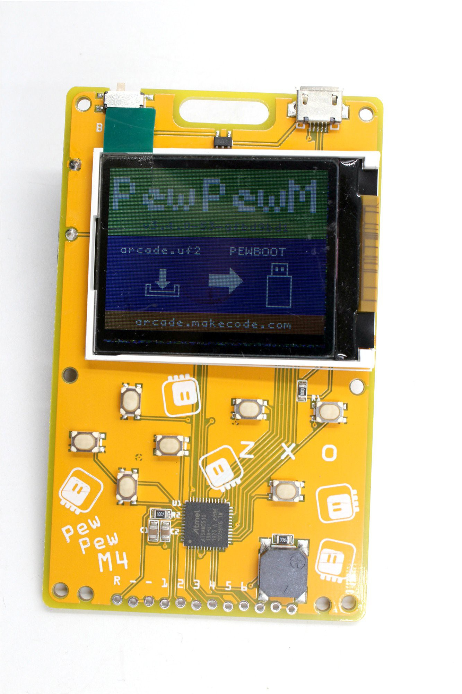

Bootloader, OSHWA and Production¶
Published on 2019-12-31 in PewPew M4.
I decided to do a bit of paperwork around this project.
The pull request adding the bootloader configuration to the uf2-samdx1 repository has just been merged: https://github.com/microsoft/uf2-samdx1/pull/84
The request for OSHWA certification is being reviewed, I expect they have holidays and will come back to me next year.
Similarily, the request to Microsoft to add this board to MakeCode Arcade website is pending.
Finally, the fabrication of the first 20 units has been successful, and I received a photo of one of the boards:
I expect they will arrive in the first half of January, just before the Spring Festival.